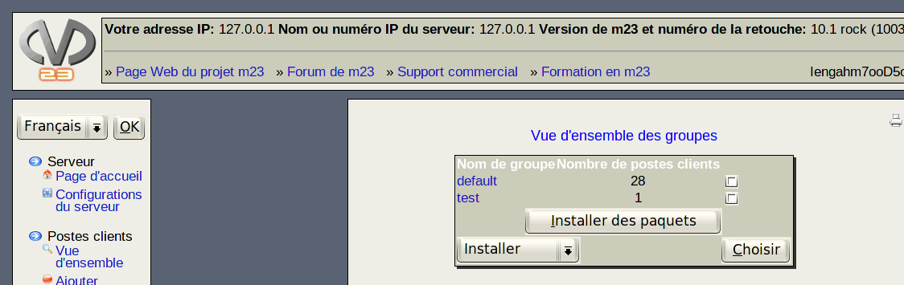

suivant:
Enregistrer des tâches aux
monter:
Administration des groupes
précédent:
Administration des groupes
Table des matières
Vue d'ensemble des groupes
Sur cette page, s'affichent les groupes et le nombre respectif de postes client dans ceux-ci. Un clic sur le nom d'un groupe affiche la page détaillant ce dernier.

Sous-sections
Enregistrer des tâches aux groupes
Procédure étape par étape:
root 2015-04-30